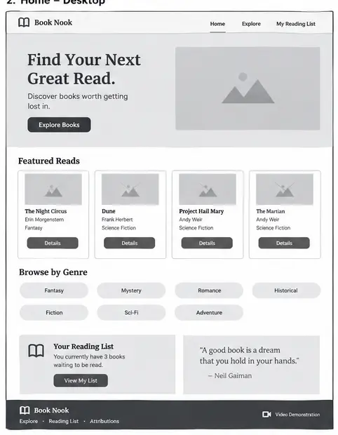
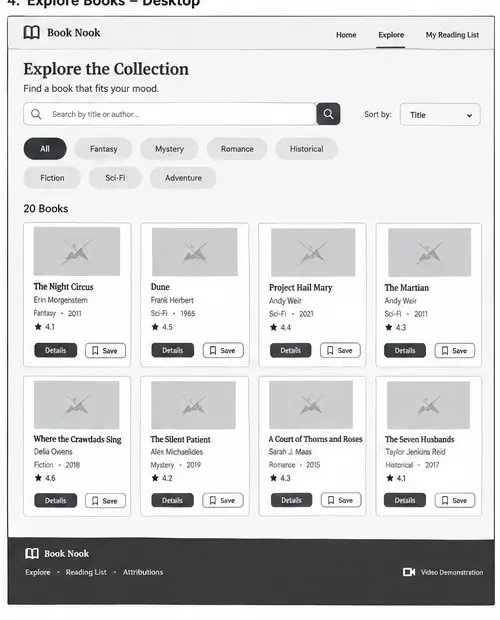
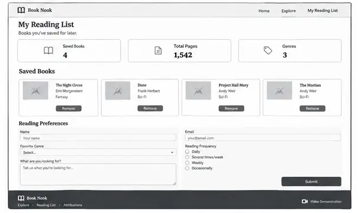
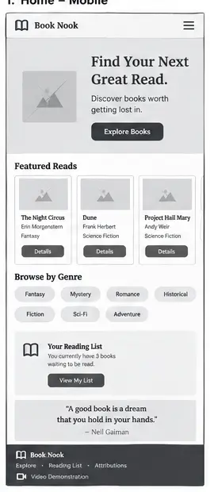
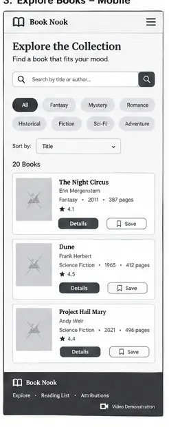
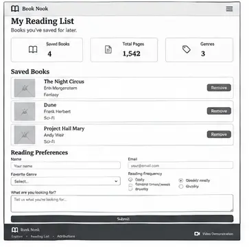
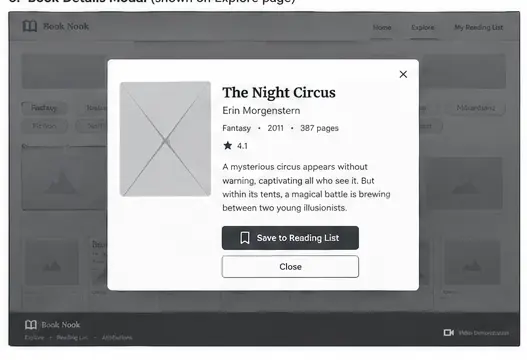

The Book Nook - Website Site Plan
Site Name
The Book Nook
Find your next great read.
Site Purpose
The Book Nook is a responsive book discovery website designed to help readers find their next book. Visitors can browse curated collections, search and filter by genre, view detailed information, and save books to a personal reading list.
The website will provde a simple and visually appealing experience for readers who want an easy way to discover books without feeling overwhelmed by choices.
Scenarios
- I'm browsing for new books to read and want detailed information about my choices.
- I want to create a new to be read list.
- I want to find specific genres to add to my list.
Color Scheme
#332B28 - Header, navigation, headings, primary text
#F7F2EA - Main Page Background
#B98282 - Buttons, links, interactive elements
#7C8870 - Secondary accents and categories
#C29A5A - Highlights and decorative accents
#FFFFFF - Cards, forms, modal backgrounds
#675A54 - Secondary text
Typography
Playfair Display - Headings
Open Sans - Body Text
Wireframes
Desktop View



Mobile View



Modal
